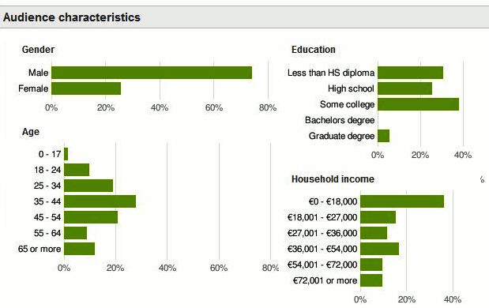

We believe security software like Whonix needs to remain Open Source and independent. Would you help sustain and grow the project? Learn more about our 14 year success story and maybe DONATE!
Data Collection TechniquesDocumentationSurveillance CapabilitiesPrevious page: Data Collection TechniquesIndex page: DocumentationNext page: Surveillance CapabilitiesInternet Corporations and Privacy Concerns
Anonymity Online. Privacy Online. Threats posed by Internet giants Amazon, Facebook, Google, Twitter and others.
Introduction
It is difficult for most to imagine day-to-day life without the Internet. Online services provide convenience and the ability to solve common tasks and problems. Indeed, the reader may have today used online banking services, purchased goods or services from websites, researched a specific topic, sourced travel information, browsed entertainment or news sites, communicated with friends on social media, or shared opinions in forums with like-minded people.
To access the Internet, the user is offered dozens of stable, highly functional, and yet easy-to-use applications: web browsers. In 2019, the most popular browser by far is Chrome, with over 80 per cent of browser market share. Lagging well behind is Mozilla's Firefox (now less than 10 percent), Microsoft's Internet Explorer / Edge, Apple's Safari, and Opera. [1] [2]
Data Mining Threats
 Without precautions, any communication over the Internet leaves a raft
of digital traces which can be automatically acquired, saved,
attributed, and analyzed.
Without precautions, any communication over the Internet leaves a raft
of digital traces which can be automatically acquired, saved,
attributed, and analyzed.
Unsurprisingly, some companies have entered the legal and regulatory void and specialized in harvesting all accessible data. An untold number of individual user profiles are generated, storing data from browsing, communications and other activities. These databases have a high commercial value since they allow an enterprise to comprehensively profile the behavior and interests of their customers, which allows for targeted advertising. [3]
Modern surveillance capitalism dictates that you are the product, leading to profiles being on-sold to other third parties. In computer lingo, this process is called data accumulation or data enhancement, but the layperson knows it as "data mining". There are many reasons to avoid leaving digital traces when browsing. Consider the following examples:
- Some of the data collected is used by credit scoring systems which are used to evaluate loan requests, to create individually priced offers or to decide on eligibility for "Cash/Collect on Delivery" service.
- Employers may create or request a character profile of their job applicants from traces found on the Internet prior to hiring them.
- Freedom of opinion is limited by governments or institutions that track individuals and what they read and say. These entities may even censor (block) certain web pages or services.
- Companies may recognize employees of other businesses or even those of their competition and subsequently harass them with promotional calls or email spam.
- Browser-related data exposes vulnerabilities in the user's computer, smartphone or peripheral electronic devices. A hacker may subsequently establish direct communications with the computer or device and attack it.
- Perhaps worst of all, digital traces are collected, saved, sent and processed without the explicit or implicit consent of the user, and often without their knowledge.
The key message is that decisions about an individual's life are frequently based on the digital litter they unknowingly scatter throughout the Internet. In the following section, the reader is briefly introduced to several popular companies that are notorious for collecting and mining data.
Amazon
Amazon is primarily an e-commerce and cloud computing company, which was established by Jeff Bezos in 1994. In 2018, it is the largest Internet retailer in the world when measured by revenue and market capitalization. Net income is growing strongly, with the company earning over $3 billion in 2017. A wide array of products and services are provided, including: [4]
... online bookstore and later diversified to sell video downloads/streaming, MP3 downloads/streaming, audiobook downloads/streaming, software, video games, electronics, apparel, furniture, food, toys, and jewelry. The company also owns a publishing arm, Amazon Publishing, a film and television studio, Amazon Studios, produces consumer electronics lines including Kindle e-readers, Fire tablets, Fire TV, and Echo devices, and is the world's largest provider of cloud infrastructure services (IaaS and PaaS) through its AWS subsidiary. Amazon also sells certain low-end products under its in-house brand AmazonBasics.
Law Enforcement
Transparency reports published by Amazon have revealed that more customer data is provided to U.S. law enforcement than by any other company. In the first half of 2017, this accounted for over 1,900 different requests, [5] comprising 1,618 subpoenas, 229 search warrants, and 89 other court orders. Amazon complies in roughly half of all cases.
Amazon has also purchased the facial "Rekognition" software as well as the Ring doorbell camera company, and has established partnerships with law enforcement to allow access to the software and relevant footage, respectively; see below.
Facial 'Rekognition' Software
Amazon has a strong financial relationship with law enforcement, having already sold facial "Rekognition" software to various police outfits. This software analyzes images or video from CCTV, body cameras, drones and other surveillance tools, then matches it against databases. [6] Considering these police databases contain pictures of people arrested, but never convicted of a crime, this is a gross violation of privacy. Further, the facial recognition error rate for people of color is unacceptably high. [7] Perhaps the greatest concern is that cities like Orlando, Florida are already trialing the Rekognition system using cameras affixed to traffic poles in various public areas: [8]
If it sees you, the camera will instantly send a live video feed over to Amazon's facial "Rekognition" system, cross-referencing your face against persons of interest. It's one of three IRIS cameras in the Orlando area whose video feeds are processed by a system that could someday flag potential criminal matches -- for now, all the "persons of interest" are volunteers from the Orlando police -- and among a growing number of facial recognition systems nationally.
In the US, there are no laws governing the use of facial recognition, and there is no regulatory framework limiting its law enforcement applications. There is no case law or constitutional precedent upholding police use of the tech without a warrant; courts haven't even decided whether facial recognition constitutes a search under the Fourth Amendment. The technology is still plagued by inaccuracies. ... To be clear, Orlando has not yet deployed a citywide facial recognition project. It is not currently processing the faces of pedestrians by comparing them to the faces of known criminals, nor are the alerts the system sends to police officers meant to detain suspicious "persons of interest." But the city's Rekognition pilot is already testing how the technology would perform these kinds of tasks. Which means -- to some extent -- that the idea of a public-facing facial recognition database that automatically scans the city for possible criminal matches has already won.
This is a grave threat to privacy, since the potential for real-time surveillance of the entire public is identical to the draconian system already established in China. As well as location tracking, this would also enable relationship tracking and the capturing of all personal activities in surveilled locations. Indirectly this leads to restrictions on freedom of speech and causes individuals to self-censor their activities and associations due to the ongoing threat of monitoring and the potential/perceived repercussions. While US authorities have claimed they would never use this technology to track activists, immigrants or random citizens, this is certainly debatable given the documented history of state monitoring of those exact groups.
Ring Doorbell Camera
Amazon acquired the Ring doorbell camera company in April, 2018. In terms of the available products: [9]
Ring offers both doorbells and cameras that you can mount at your residence to keep an eye on the property when you aren't home. While both Ring cameras and doorbells capture live video, they serve different security purposes in your home. A Ring camera may work as a security camera for the property, while Ring doorbells allow you to monitor and respond to visitors at your door. ... A Ring camera gives you a live feed of areas inside or outside your property, allowing you to check in on your home or business at any time through the Ring app. ... A Ring doorbell provides the features of a regular doorbell along with a built-in video camera. When a visitor approaches your door, all Ring doorbells include a motion detection feature, altering the Ring app on your smartphone about the visitor. You can answer the door when you're away from home, and the doorbell stores video footage of visitors.
In essence the Ring camera detects motion when people come near the property. Owners receive notifications on their phone, tablet or PC, and can speak, hear and speak to visitors in real-time. [10] Since acquiring the company, Amazon has been establishing partnerships with law enforcement that allows consumers to share security footage to aid police investigations via a Neighborhood application. This neighborhood surveillance product is already being used by police in multiple locations such as: "...Addison, Illinois; Anne Arundel, Maryland; Auburn Hills, Michigan; Birmingham, Alabama; and Bloomfield, New Jersey, among others." It has also been previously reported that unencrypted customer video files were accessible to teams on company servers, as well as live feeds from some customer cameras. [11]
Amazon is unapologetic for yet another surveillance product it has placed on the market, despite inevitable abuses emerging such as the LAPD's request for neighborhood footage associated with widespread protests in the wake of George Floyd's death in 2020. Despite the protests being largely peaceful -- only 6-7% of protests resulted in any violence -- an LAPD taskforce requested footage to help investigate "significant crimes committed during the protests and demonstrations". This highlights that Ring can (among other things) potentially be used to suppress the protected right to protest, with activists facing retribution for participating in political movements. Dragnet surveillance of this form blurs the line between public and private surveillance and might be used to target innocent people in the future. [12] [13]
One ironic outcome of Ring surveillance is that in numerous cases owners are being notified of "suspicious activity" when police or other agents approach their front door, thereby providing an early notice of law enforcement activity such as planned searches. This can hinder the execution of a search or even pose potential safety risks to law enforcement personnel depending on the person/s of interest and their alleged crimes. Nevertheless, overall Ring products are a firm negative for privacy rights, particularly since customers are encouraged to keep tabs on "suspicious-looking individuals", thereby creating residential private-sector security bubbles. [14]
Military and IC Contracts
Amazon also deserves particular attention due to its close business relationship with the military and intelligence communities. As Wikileaks has noted: [15]
- In 2013, a $600 million CIA contract was finalized to build a cloud for use by the IC.
- In 2017, Amazon established a cloud to store workloads up to the Secret U.S. security classification level. [16]
- At the time of writing, Amazon is a leading contender for a $10 billion contract to build a private cloud for the Department of Defense.
- Amazon accounts for 34 per cent of the cloud infrastructure services market. [17]
Other Privacy Concerns
The ACLU notes that Amazon continues to recklessly develop and market various technologies, despite the risks to privacy and human rights: [18]
"It is disturbing that Amazon continues to actively ignore warnings from members of Congress, civil rights groups, the public, and its own shareholders and employees about the dangers of its technology," said Jacob Snow, technology and civil liberties attorney for the ACLU of Northern California.
Amazon has been embroiled in a number of privacy scandals concerning its products and portal, including but not limited to:
- Using aerial drones to deliver products (due to the surveillance risk). [19]
- Logging data and page request details via "cloud acceleration" features of their Silk Browser. [20]
- Amazon Echo devices:
- When used in the home they are always listening, but it is meant to only capture snippets of conversation after a "wake word". However, Amazon's refusal to hand over data in a recent police homicide case in the U.S. raises questions about the extent of actual recordings the company maintains. [21] [22]
- In 2019 it was revealed that thousands of Amazon employees and contractors are listening to Echo voice recordings to improve the Alexa digital assistant's understanding of human speech. [23] [24]
- Amazon Kindle e-book readers closely monitor the activity of all users, including: search habits, sharing user data without consent, tracking purchases, and monitoring how books are read after purchase. [25]
- Filing patents on augmented reality goggles that track warehouse workers. [26]
- Amazon "Go" stores that have no cashiers, but hundreds of cameras and sensors to track shoppers as they walk around the store and swipe their phone to pay for items. [27] [28]
- The Amazon privacy policy is similar to Facebook, Google and Twitter insofar as they reserve the right to collect anything that is practically possible; see here.
Conclusion
Considering Amazon is actively developing technology which is being used to extend the range and accuracy of surveillance tools in public and (formerly) private spaces, they are undeserving of trust and a general threat to personal liberties.
The close financial relationship with the IC and law enforcement communities only increases the doubt about Amazon's trustworthiness, since a host of products and services harvest enormous amounts of data in the cloud. It will be truly unremarkable if future disclosures reveal this data was subsequently exploited (extra-legally) for intelligence gain.
Introduction
Thirteen years after its founding, Facebook has around 2 billion total users and 1.3 billion daily active users across all devices. [29] The amount of activity conducted on the site is incredible: [30]
- Daily, around 300 million photos are uploaded.
- In 2013, 4.75 billion pieces of content were shared daily.
- Every 60 seconds, 510,000 comments are posted and 293,000 statuses are updated.
- In 2012, one in every 5 page views in the US occurred on Facebook.
- Also in 2012, five new profiles were created every second.
Revenue Model
Facebook is a veritable paradise for data-miners and advertisers. In fact, 42% of marketers report Facebook is critical or important to their business. [30] In early 2016, Facebook confirmed it had three million active advertisers, and 70% of those were outside the US. [31]
The majority of Facebook's revenue relies on click-through rates for various advertised products and services, and the ability to build an extensive profile of each user, thus allowing targeted advertisements and creation of valuable data-sets. [32] At the end of 2016, Facebook's revenue jumped to $8.8 billion, with advertisement revenue comprising 94% of the total ($8.3 billion) [33] The estimated net worth of the company is $500 billion. [34]
Facebook has nearly perfected an expansive ecosystem that entices users to comprehensively populate their own monetized, digital profile over time. Extensive profiling and tracking is made possible via user profiles, user groups, personal timelines, comments, network connections with other individuals, photos, software applications, games, "like" and "subscribe" buttons, reading and sharing of news feeds, instant messaging, video/voice chat, and cross-domain tracking via "like" and "share" buttons and invisible pixels [35] on more than 10 million third-party websites (in 2014). [36]
Harmful Impacts
While Facebook is extremely profitable, it comes with great societal, emotional and political costs. In early-2019, leaked internal Facebook documents revealed it has engaged in global lobbying against data privacy laws. In fact, the company has tried to influence legislators by promising, or threatening, to withhold investment -- a successful strategy in both Canada and Malaysia, where the prospect of new data centers and the associated job creation won legislative guarantees.
Not only is Facebook a toxic host sucking users' digital wells dry, but it has also enforced a real user name policy to aid profiling, and regularly censors users and news it finds unpalatable. Further, it is regularly targeted by advanced adversaries because the treasure trove of personal data makes it an attractive target. [37]
Chronic use of Facebook is linked with negative physiological effects like jealousy, stress, and social media addiction. [38] Facebook is also fond of conducting unannounced psychological experiments, such as feeding users selective (biased) articles via its News Feed algorithm to skew opinions. [39] In another case, Facebook manipulated the emotions of users by secretly changing information that was posted on 100s of thousands of home pages. [40]
In a fashion similar to Google, Facebook has also abused its monopolistic power in late-2018, by purging hundreds of pages and accounts [41] which it vaguely referred to as engaging in "coordinated inauthentic activity". [42] Facebook confirmed that it was "banning... Pages, Groups and accounts created to stir up political debate," which cynical observers have noted includes accounts (with millions of followers) like: [43]
- News outlets with views counter to mainstream channels.
- Accounts agitating for political change.
- Accounts tracking (alleged) crimes and misbehavior by Police.
Perhaps worst of all, any data harvested by Facebook is likely to be kept indefinitely. Facebook keeps broadening the scope of their data collection over time, and is now threatening the privacy of individuals who avoid their services altogether. For example, automatic facial recognition software has already been applied to uploaded photos, which means that if a person's photo is also tagged by name, Facebook now has a permanent and identifiable face-print linked to a unique individual. [44] The significant privacy concerns posed by Facebook are explored in further depth below.
Privacy Concerns
Facebook's CEO, Mark Zuckerberg, has shown complete disregard for the privacy rights of users in the past. When the fledgling social media enterprise was first founded in 2004, a then 19 year old Zuckerberg revealed his true thoughts in a number of instant messages to Harvard friends: [45]
Zuckerberg jokes in another exchange that 4,000 people have submitted emails, pictures and addresses to his budding Harvard social network. "People just submitted it ... I don't know why ... They 'trust me' ... dumb fucks."
Facebook would not confirm or deny that the messages were authentic when asked on Friday, but Zuckerberg told the New Yorker in September 2010 that he absolutely regretted sending them.
"If you're going to go on to build a service that is influential and that a lot of people rely on, then you need to be mature, right? I think I've grown and learned a lot," Zuckerberg told the magazine in 2010.
It is true that Zuckerberg has matured, but only in the sense that he has perfected a data-mining business empire of unparalleled proportions.
Facebook Application
Few people relying on the Facebook mobile application probably realize the truly invasive nature of the "free" product. The Electronic Frontier Foundation nicely summarizes the numerous tracking threats: [46]
- tracks you through Like buttons across the web, whether or not you are logged in or even have a Facebook account.
- maintains shadow profiles on people who don't use Facebook.
- logs Android users' calls and texts.
- absorbs unique phone identifiers through in-app advertising to associate your identity across the different devices you use.
- tracks your location and serves ads based on where you are, where you live, and where you work.
- tracks your in-store purchases to link the ads you see online with the purchases you make offline.
- watches the things you start writing but don't post to track your self-censorship.
- linked purchases to Messenger accounts to allow sellers to send confirmation messages without affirmative user permission.
- bought and advertised a VPN to track what users are doing on other apps and crush competition.
- manipulated your Newsfeed to see if it can make you sad or happy.
- files patents for emerging tracking technology, like tracking your location through the dust on your phone camera, for potential future use.
Advanced Adversaries
It is logical that a data warehouse of people's entire lives should become a prime target for attack from entities who crave access to it. Public authorities, secret services and advanced criminal networks are already accessing the information gathered by Facebook to snoop into users' private lives. One recent example is the late-2018 Facebook data breach, which has affected an estimated 30 million accounts. Via stolen access tokens, the attackers were able to steal information like name, phone number and email address. This aids efforts to break into other legitimate accounts and phishing attacks. The EFF notes other personal information at risk includes: [47]
- Username
- Gender
- Locale/language
- Relationship status
- Religion
- Hometown
- Self-reported current city
- Birthdate
- Device types used to access Facebook
- Education
- Work
- The last 10 places they checked into or were tagged in
- Website
- People or Pages they follow
- Their 15 most recent searches
For another example, the Israeli military is scanning Facebook profiles of Israelis dodging the draft. Secret services of other countries are acting more aggressively. For instance, the Agence Tunisienne d'Internet (ATI) used "Javascript Injection Attacks" in order to get the login data of suspected activists. These profiles were then taken over and scanned for evidence, leading to the detention of several users.
Analyzing Gaming Behavior
Facebook offers different games for its members like "Farmville" or "Mafia Wars". The moves of the participants are analyzed and character traits are derived. Eventually, the user profiles are commercialized, allowing companies to buy the profiles of potential applicants.
Connections Between Friends
The contact relationships of users are analyzed with different goals in mind. First of all, they are used for friend-to-friend advertisements. Users are often blissfully unaware that they serve as an advertising medium. Targeted advertising is improved by identifying opinion leaders in contact networks, so sponsored stories can be published.
Another way of analyzing contacts is demonstrated by Gaydar. Looking at the contacts in Facebook profiles, MIT students were able to extract the sexual orientation of the respective account owner. This kind of information can significantly damage a person's career or even place them in jeopardy in certain jurisdictions. Further, similar analysis can be used to determine political orientation, interests and other variables by public or private entities.
Deceptive Business Tactics
In late-2018, researchers have identified that Facebook has used members' phone numbers for targeted advertising, even when that contact information was only provided for security purposes (two-factor authentication). Even worse, the same "shadow information" has been harvested from the friends of Facebook members who never directly provided it. Considering this practice was denied by Facebook executives in the recent past, zero trust can be placed in the corporation. The oft-stated Facebook claim that "users have complete control over their personal information" is simply laughable. [48] [49]
Another recent example of Facebook's deceptive tactics relates to new users who created a Facebook account paired with email providers like Yandex, GMX, Yahoo, Hotmail, AOL, and Comcast. In early-2019, Facebook was using classic phishing tactics by demanding email accounts and passwords to complete registration, which then automatically harvested the email contacts of the new user without explicit consent: [50]
Last weekend, news broke that Facebook has been demanding some new users enter their email passwords in order to sign up for an account on the site. First publicized by cybersecurity specialist e-sushi on Twitter, the unnervingly phishing-like process worked like this: any user who tried to create a new account on Facebook with an email from one of a few providers (including Yandex and GMX) was directed to a page that asked them to "Confirm [Their] Email"--by entering their email password.
...
So why was Facebook's design so intent on getting users to input their passwords?
...
Somewhere in a cavernous, evaporative cooled datacenter, one of millions of blinking Facebook servers took our credentials, used them to authenticate to our private email account, and tried to pull information about all of our contacts.
Although this practice has ceased following media exposure, it reinforces the notion that Facebook is a data harvesting company and not a social network. While Facebook claims it is designed to: "Connect with friends and the world around you on Facebook.", the real intent is mining rich data sources like email accounts since they are digital passports linked to various services, social media, financial accounts and more. Facebook's social networking functions provide a shiny veneer to the third-party data trading that underpins the bulk of company revenue, with users being conditioned to accept increasingly intrusive tactics by the company. [51]
Facial Recognition
Publishing private pictures is one of the most popular activities on Facebook. However, most do not realize that facial recognition software has been deployed, allowing Facebook to identify several million people daily: [52]
Every time one of its 1.65 billion users uploads a photo to Facebook and tags someone, that person is helping the facial recognition algorithm. The tag shows the algorithm what someone looks like from different angles and in different lights, Frankle says. If you give Facebook a face to identify, it has fewer photos to parse through, because it's only looking at photos of you and your friends.
Facebook, according to the company, is able to accurately identify a person 98 percent of the time. Compare that with the FBI's facial recognition technology, Next Generation Identification, which according to the FBI, identifies the correct person in the list of the top 50 people only 85 percent of the time.
With such a huge database of verifiable faceprints, Facebook will be sure to eventually commercialize this database. In one possible dystopian future, customers may enter a shop and be automatically identified by camera, thus allowing the salesperson to immediately access a comprehensive personal profile (if Facebook services have been purchased). As the then CEO of Google, Eric Schmidt, noted in 2010: [53]
Show us 14 photos of yourself and we can identify who you are. You think you don't have 14 photos of yourself on the internet? You've got Facebook photos!
Privacy Policy
"Mir sind keine Datenschutzbestimmungen von Facebook bekannt, die diesen Namen verdienen. Es handelt sich um Nutzungsregelungen, die grob nach dem Muster ablaufen: Du Nutzer bist für alles verantwortlich, was Du bei uns machst. Und wir dürfen mit den Daten dann alles machen, was uns gefällt." (Dr. Thilo Weichert, data protection commissioner of Schleswig-Holstein (Germany))
Translation: "According to my information there is no privacy policy that deserves its name. It is all about terms and conditions that are roughly working like this: You the user are responsible for everything you are doing here. And we may do anything we like with the data."
In summary, if Facebook is analyzed objectively, then it is clear it has already morphed into a "net within the net", with horrible Orwellian visions.
Introduction
It is generally known that Google's business model is based on the collection of data and the analysis thereof. However, many users have no concept of the comprehensiveness of Google's surveillance, nor the extensive (and highly profitable) personal profiles generated from harvested data.
In general, Google is dismissive of the universal right to privacy, explaining their unsavory history of working hand-in-glove with government. The then CEO Eric Schmidt declared in 2009: [54]
"If you have something that you don't want anyone to know, maybe you shouldn't be doing it in the first place. If you really need that kind of privacy, the reality is that search engines including Google do retain this information for some time and it's important, for example, that we are all subject in the United States to the Patriot Act and it is possible that all that information could be made available to the authorities."
Eric Schmidt is also supremely confident of the extent of Google's data collection, boasting in 2010: [55]
With your permission, you give us more information about you, about your friends, and we can improve the quality of our searches. We don't need you to type at all. We know where you are. We know where you've been. We can more or less know what you're thinking about.
Google Censorship
Ever the accommodating corporate partner, Google is also fond of censoring user content when government pressure is applied. This includes the recent decisions to tweak their search algorithm to bury left-wing or independent media sites and articles, and the removal of the RT broadcaster from their premium Youtube video inventory. [56] [57] This perception was further reinforced in late-2018, when a leaked internal Google document revealed the company is shifting towards moderation and censorship, having abandoned any commitment to free speech, particularly if it is politically-motivated. The document admits that government pressure and revenue growth in a tough corporate environment are the driving factors for this action. [58]
Popular social media platforms Facebook and Twitter also have a history of kowtowing to government demands in the era of McCarthyite and terrorist hysteria; for example see here and here.
Technological Support to Surveillance Capitalists
It should be noted that Google's actions have contributed to surveillance efforts in authoritarian states like China. The Intercept has revealed the non-profit OpenPower Foundation (led by Google and IBM) has set up a collaboration between the Shenzen-based company Semptian and the US chip manufacturer Xilinx. This has resulted in a new form of microprocessors that can analyze vast data troves more efficiently. Alarmingly, this 'innovation' has contributed to human rights abuses and censorship in China: [59]
Shenzhen-based Semptian is using the devices to enhance the capabilities of internet surveillance and censorship technology it provides to human rights-abusing security agencies in China, according to sources and documents. A company employee said that its technology is being used to covertly monitor the internet activity of 200 million people. ...
Aegis can provide "a full view to the virtual world," the company claims in the documents, allowing government spies to see "the connections of everyone," including "location information for everyone in the country."The system can also "block certain information [on the] internet from being visited," censoring content that the government does not want citizens to see, the documents show.
Chinese state security agencies are likely using the technology to target human rights activists.
Aegis equipment has been placed within China's phone and internet networks, enabling the country's government to secretly collect people's email records, phone calls, text messages, cellphone locations, and web browsing histories, according to two sources familiar with Semptian's work.
Revenue Model
Google is a multi-national Internet company based in California, which is itself part of the larger Alphabet parent company as of November 2016. Although it focuses on online search, advertising, cloud computing, and other digital products and services, it's primary source of revenue is from advertising. In 2016, Google earned $89.5 billion in global revenue and had a net income of $19.5 billion. Advertising revenue comprised the lion's share at nearly $80 billion. [60] [61] This proportion is similar to 2009 figures, when 96 percent of Google's revenue was generated by personalized advertisements.
The advertising revenue itself is a product of profiling captured by browsing, search engine, and other data. For instance, in November 2016 Google was ranked first among the most visited websites with 246 million unique visitors, and around 63 percent of market share among the major US search engine providers. [60] In 2017, Google's share of the global search engine market is around 77 percent, with the number of annual Google searches in the realm of 1-2 trillion [62]. Other estimates provide a daily figure of 4.5 billion Google searches. [63]
As at 2009, it was estimated by experts that there were around 1.5 million servers working for Google in different data centers, with a growth rate of an extra 100,000 every three months. The annual costs of this infrastructure are approximately 2 billion dollars. Some later estimates from 2013 are lower at a little more than 1 million servers, but nevertheless the infrastructure is extensive. [64]
The whole infrastructure may be used for "free" in the monetary sense, but the real cost is the loss of control over extremely personal data. According to the Electronic Frontier Foundation (EFF), Google is logging the traffic which can be unambiguously linked to a particular person and examining various characteristics. This in turn affects the deployment of the search engine and Google services like YouTube or Google Earth. It similarly applies to pop-up/flashing advertisements on other web sites and of course to tracking tools like Google Analytics.
The accumulation of basic data over time leads to comprehensive profiles of individual users browsing the Internet. Due to its popularity and extensive server network, Google is almost able to capture the entire searching and browsing behavior of individuals. In Germany, 89 percent of search requests go directly to Google. Furthermore, 85 percent of German web sites have embedded elements (Google Analytics, flashing advertisements, Google+ widgets and so on) which allow Google to track users across multiple web pages.
It is impossible to know how exact and comprehensive Google's personal profiles are. One rough estimate can be obtained by using the data the company is providing to its advertisement partners. For example, the following figure shows the aggregated statistics of an unnamed website.
Figure: Google Visitor Statistics

In addition to age and gender, Google is able to estimate the education level and income of almost all Internet surfers. Additionally, they gather data in relation to interests, political orientation and contact addresses (e-mail, instant messaging) just to name a few variables. As the Wall Street Journal noted in an analytical piece, there are even ways to assess the likelihood of a person paying by credit card.
Researchers Bin Cheng and Paul Francis from the Max Planck Institute for Software Systems have shown that it is even possible to ferret out gay users by analyzing clicks on advertisements. This method can obviously be adapted to identify people with different interests, allowing the delivery of more individualized advertisements. "Big data" is also used for retargeting users who do not buy anything when visiting an online store. The strategy is to overwhelm those users with advertisements of similar products in the aftermath of their decision; Google is even offering a special AdSense program with retargeting features.
Data Collection Techniques
The following is an inexhaustive list of Google techniques to collect personalized data.
Method |
Description |
|---|---|
Cookies |
Google places cookies on a user's computer to track web browsing across a large number of unrelated websites, and to track search history. If logged into a Google service, cookies are used to record which account is accessing each website. As of 2016, Google's privacy policy makes no promises about whether/when web browsing and search records will be deleted from its records - it is safest to assume that this means indefinitely. [66] |
Data Aggregators |
Google collects and aggregates data about users through developer tools such as Google Analytics, Google Fonts and Google APIs. This enables IP address tracking across successive sites (cross-domain web tracking). Developers are encouraged to use these tools and communicate IP addresses to Google. |
DoubleClick Advertisements |
In 2016, Google changed the privacy policy to allow for web-browsing records obtained through DoubleClick to be combined with records gathered from other Google services. |
Gmail |
Email content until 2017 was processed and read (scanned) by a computer for targeted advertising purposes and spam prevention; the practice has now allegedly ceased. Under Google policies, there is an unlimited period of data retention and the potential for unintended secondary use of this information. Google has already admitted users have "no reasonable expectation" of confidentiality regarding personal emails. |
Google Chrome |
|
Google Home |
Google Home smart speakers have been shown to eavesdrop, even when they are not activated. If anyone says something that resembles "Hey, Google" or "OK, Google" the product starts to record. Since, a certain percentage of audio recordings are reviewed by subcontractors for transcription purposes, this means highly personal conversations are potentially being examined. [71] |
Google Play |
A host of clandestine trackers are placed in Android's apps that are downloaded from Google Play. Researchers recently discovered 44 trackers in more than 300 apps for the Android OS that have been collectively downloaded billions of times. |
Google Search Engine |
Google records what a user types into the web address field, sending that information to Google servers which populate search suggestions. If the user is signed into a Google account, those searches are saved in the account's web history. Searches are saved for years, if not indefinitely. |
Google Street View |
Google's online map service has extensively captured pictures of people's private homes, as well as collecting a trove of data on unencrypted public and private WiFi networks world-wide. Google initially defied critics and stated they would not destroy the data until forced by regulators, despite the activity constituting widespread wiretapping. |
Link Tracking |
This technique allows Google to follow a user whenever clicking on a link that exits their website. This is used on both their search engine pages, as well as places intended for "private" conversations such as Google Docs and Hangouts. [72] [73] |
Other Browsers |
Google has previously bypassed privacy settings set by other browsers (for example, Safari's cookie blocking mechanism) in order to track online activities. |
Pixel Tags |
Often used in combination with cookies, pixel tags are placed on websites or within the body of an email for the purpose of tracking activity on websites, or when emails are opened or accessed. [74] |
Satellite Imaging |
Google has acquired Skybox Imaging, which runs a network of high-definition, modern satellites which are used to collect and analyze micro-geographical and human data. [75] [76] |
Student Chromebook Users |
Google has decided to track and build behavioral profiles of students using school-supplied Chromebooks and Google education apps, leading to the capture of their entire Internet browsing history. [77] [78] |
Weak Privacy Policies |
The Google
privacy policy applies to all Google services and ecosystems. This
includes the right to collect information such as:
[79] |
Conclusion
In summary, Google has built the infrastructure to build a complete profile of a user by name, which combines detailed hardware and software identifiers with everything written in email, every website visited, every search conducted, and nearly all interactions occurring within Google ecosystems and applications. [81]
As well as creating databases on entire populations, Google has previously acquired companies that have received capital from the investment arm of the CIA (In-Q-Tel), and cooperated with the NSA's PRISM surveillance program so they had direct access to company servers. Google also readily responds to US government requests for data on Google users worldwide, as well as domestic police "geofence" warrants which specify all Google devices that were within a particular area at a certain time. [82] [83]
Google is the greatest corporate threat to privacy and liberty worldwide, perhaps explaining why their motto was changed from "Don't be evil" to "Do the right thing" in 2015, since their blatant data-mining practices and hostility to anonymity were no longer defensible. [84]
RapLeaf
The company RapLeaf is collecting data profiles via e-mail addresses. The data is not used for personalized advertisements, but rather, it is just sold. Potential buyers pass a list of e-mail addresses to RapLeaf and receive the profiles back after paying the bill. The cost is dependent on how comprehensive the profiling is. For example, the following is a short abridgment out of the 2011 price list:
- Age, Gender and Location: 0 Cent (loss leader)
- Household income: 1 Cent per e-mail address
- Marital Status: 1 Cent per e-mail address
- Presence of Children: 1 Cent per e-mail address
- Home Market Value: 1 Cent per e-mail address
- Loan-to-Value Ratio: 1 Cent per e-mail address
- Available Credit Cards: 1 Cent per e-mail address
- Cars in Household: 1 Cent per e-mail address
- Likely Smartphone User: 3 Cent per e-mail address
- Occupation and Education: 2 Cent per e-mail address
- Blogger: 3 Cent per e-mail address
- Charitable Donor: 3 Cent per e-mail address
- High-End Brand Buyer: 3 Cent per e-mail address
- Interested in Books/Magazines: 3 Cent per e-mail address
- ...
The data is gathered by correlating e-mail usage with browsing behavior or via data leaks which frequently occur when using online merchants' platforms. Also, data arising from the use of Twitter and other commercially available databases from large Internet companies is included in the processing. It can be reasonably assumed that RapLeaf also uses the data collection services of other profiling companies as well. One of the major RapLeaf investors is Peter Thiel, who founded PayPal and is significantly contributing to Facebook development in the background.
Introduction
Twitter was founded in March, 2006 and is based in San Franciso, California. In 2017, Twitter is valued at $16 billion and it is a very active platform: [85]
- There are around 330 million users.
- 100 million users are active daily.
- 500 million tweets are sent daily.
- Most users prefer mobile platforms (80%).
- Nearly 80% of all accounts are outside the US.
Revenue Model
Twitter's revenue in 2016 was $2.5 billion, but they made a net loss of $457 million. [86] The majority of this stemmed from advertising revenue (85%), which in turn is sourced primarily from mobile advertising; 88% of total advertising revenue. [87] [88] [89]
Much like Google and Facebook, Twitter has decided to monetize user data, in this case tweets, through data mining and advertising: [90] [91]
Computer systems are already aggregating trillions of tweets from the microblogging site, sorting and sifting through countless conversations, following the banter and blustering, ideas and opinions of its 288 million users in search of commercial opportunities.
...
Selling data is as yet a small part of Twitter's overall income $70m out of a total of $1.3bn last year, with the lion's share of cash coming from advertising, but the social network has big plans to increase that. Its acquisition of Chris Moody's analytics company Gnip for $130m last April is a sign of that intent.
Twitter can match users against a company's customer database for targeted advertising. There are various matching methods available, including by using emails. For example, if an auto company knows that a user is interested in buying a new car, then Twitter can be used to send a direct advertisement. The data profiles are also onsold to other social networks like Facebook and photo-sharing site Tumblr. [92] [93]
In an identical fashion to Facebook and Google, Twitter has also adopted tracking of Internet browsing via "tweet" widgets embedded in millions of websites. [94]
Privacy Policy
Twitter's so-called privacy policy makes it clear the user has none, since they reserve the right to collect anything not nailed down, including: [95]
- Basic account and contact information like name, username, email address, or phone number.
- Any additional information provided by the user such as address book contacts.
- Obviously public tweets, following, lists, profile and other visible information.
- Location information via GPS, wireless networks, cell towers, and IP address.
- Interactions with links across Twitter services such as email notifications, third-party services, and client applications.
- Website usage data via persistent and session cookies.
- Interaction with Twitter content, even if a user has not created an
account. "Log Data" includes: [96]
- IP address.
- Browser type.
- Operating system.
- Referring web page.
- Pages visited.
- Location.
- Mobile carrier.
- Device information.
- Search terms.
- Cookie information.
Further, the privacy policy freely admits services are supported by advertising, and that user information is received from, and shared with, third parties like Google Analytics. For example: browser cookie ID, mobile device ID, cryptographic hash of email addresses, demographic or interest data, content viewed, or actions taken on a website or application.
If the reader is in any doubt that Twitter users are the actual commodity, consider this: [95]
In the event that we are involved in a bankruptcy, merger, acquisition, reorganization or sale of assets, your information may be sold or transferred as part of that transaction. This Privacy Policy will apply to your information as transferred to the new entity. We may also disclose information about you to our corporate affiliates in order to help provide, understand, and improve our Services and our affiliates' services, including the delivery of ads.
Conclusion
In conclusion, Twitter is yet another US-based data hoarder and trader preying on a multitude of Internet users. Yet, Twitter is statistically small fry in comparison to Facebook and Google, since it has not yet learned to fully leverage their personal data-sets to turn a consistent profit. However, with losses growing smaller by the quarter and rapid growth in the user base, they may soon cement their position as the third major player in the digital data trade.
Fingerprint.com
Quote Fingerprint.com demo year 2022
12% of the largest 500 websites use Fingerprint
It lists a few example customers.
checkout.com yahoo ebay coinbase agoda usbank booking.com target
Browser fingerprinting is very accessible to anyone. Quote Fingerprint.com pricing in year 2022:
Pricing
Fingerprint Pro, $0 per month, Free forever for developers and small sites up to 20K identifications per month.
See also Browser Tests, Fingerprint.com.
serverless
Until last revision of 20 January 2021 the definition of serverless was:
(computing) Not involving a server; composed only of clients.
serverless architecture
It was then changed to include cloud computing.
(computing) Based on a cloud computing execution model in which the cloud provider allocates machine resources on demand.
Footnotes
- https://www.w3schools.com/browsers/
- As of 2016, Opera is owned by the Chinese Golden Brick Capital consortium.
- The corollary is that government bodies pursue the same profiling behavior for targeting persons or entities of interest.
- https://en.wikipedia.org/wiki/Amazon_(company)
- https://www.zdnet.com/article/amazon-turns-over-record-amount-of-customer-data-to-us-law-enforcement/
- https://www.activistpost.com/2018/06/amazon-shareholders-call-on-jeff-bezos-to-stop-selling-facial-rekognition-software-to-police.html
- It is likely this software will soon be extended to all U.S. border regions, as well as educational facilities.
- https://www.buzzfeednews.com/article/daveyalba/amazon-facial-recognition-orlando-police-department
- https://www.chicagotribune.com/consumer-reviews/sns-bestreviews-home-ring-cameras-vs-ring-doorbells-20210420-sgp4gfqhendz7er5fvkocxizq4-story.html
- https://ring.com/doorbell-cameras
- https://www.buzzfeednews.com/article/daveyalba/a-new-map-shows-all-the-places-where-police-have-partnered
- https://theintercept.com/2021/02/16/lapd-ring-surveillance-black-lives-matter-protests/
- Particularly since private citizens can turn over material directly to Police if requested, without the oversight of a judge.
- https://theintercept.com/2019/02/14/amazon-ring-police-surveillance/
- https://wikileaks.org/amazon-atlas/
- https://aws.amazon.com/blogs/publicsector/announcing-the-new-aws-secret-region/
- The location of these data centers have just been leaked, see here.
- https://www.thedailybeast.com/amazon-pushes-ice-to-buy-its-face-recognition-surveillance-tech
- https://www.cnet.com/news/amazon-drones-stir-up-privacy-concerns-among-lawmakers/
- https://www.computerworld.com/article/2499304/data-privacy/amazon-answers-some-privacy-concerns-about-new-silk-browser.html
- https://www.latimes.com/business/technology/la-fi-tn-amazon-echo-privacy-qa-20170105-story.html
- The device also poses an obvious privacy risk from hackers.
- https://www.latimes.com/business/la-fi-tn-amazon-alexa-echo-privacy-listening-20190411-story.html
- Amazon has confirmed this activity:
"We take the security and privacy of our customers' personal information seriously," an Amazon spokesman said in an emailed statement. "We only annotate an extremely small sample of Alexa voice recordings in order [to] improve the customer experience. For example, this information helps us train our speech recognition and natural language understanding systems, so Alexa can better understand your requests, and ensure the service works well for everyone."
- https://www.ibtimes.com/psst-your-amazon-kindle-spying-you-925439
- https://www.telegraph.co.uk/technology/2018/08/03/privacy-concerns-amazon-plans-augmented-reality-goggles-track/
- https://www.chicagotribune.com/business/ct-biz-amazon-go-cashierless-store-20180123-story.html
- In effect, the data harvesting operation is masquerading as a grocery store.
- Facebook was founded in 2004.
- https://zephoria.com/top-15-valuable-facebook-statistics/
- https://en.wikipedia.org/wiki/Facebook#Number_of_advertisers
- https://en.wikipedia.org/wiki/Facebook#Corporate_affairs
- https://www.abc.net.au/news/2017-02-02/facebook-fourth-quarter-earnings/8234506
- https://money.cnn.com/2017/07/27/investing/facebook-amazon-500-billion-bezos-zuckerberg/
- https://techcrunch.com/2018/02/19/facebooks-tracking-of-non-users-ruled-illegal-again/
- https://en.wikipedia.org/wiki/Facebook#Website
- For example, Facebook forms a core part of the NSA's PRISM program.
- https://en.wikipedia.org/wiki/Facebook#Criticisms_and_controversies
- https://web.archive.org/web/20210618035331/http://www.irishtimes.com/business/technology/facebook-news-feed-displays-political-bias-1.2211055
- https://www.theguardian.com/technology/2014/jun/29/facebook-users-emotions-news-feeds
- In an apparent coordinated strike with Google, which is highly suggestive of government pressure on both companies.
- https://about.fb.com/news/2018/10/removing-inauthentic-activity/
- Notably the spectrum of censorship has broadened from alleged fake Russian accounts in 2016, to censoring political and other speech of US and non-US citizens alike in 2018. While ostensibly targeted at "misinformation", the real effect is to suppress undesirable speech.
- https://www.extremetech.com/extreme/178777-facebooks-facial-recognition-software-is-now-as-accurate-as-the-human-brain-but-what-now
- https://www.theguardian.com/technology/2012/may/18/mark-zuckerberg-college-messages
- https://www.eff.org/deeplinks/2018/04/facebook-doesnt-need-listen-through-your-microphone-serve-you-creepy-ads
- https://www.eff.org/deeplinks/2018/10/what-do-if-your-account-was-caught-facebook-breach
- https://www.eff.org/deeplinks/2018/09/you-gave-facebook-your-number-security-they-used-it-ads
- For instance, Facebook is yet to provide a "shadow information" section in the relevant section of the user profile.
- https://www.eff.org/deeplinks/2019/04/facebook-got-caught-phishing-friends
- Until strict digital data provisions are enacted and Facebook faces the prospect of multi-million dollar fines for each breach, the likelihood of related incidents in the future is high.
- https://www.npr.org/sections/alltechconsidered/2016/05/18/477819617/facebooks-facial-recognition-software-is-different-from-the-fbis-heres-why
- https://www.independent.co.uk/life-style/gadgets-and-tech/news/google-chief-my-fears-for-generation-facebook-2055390.html
- https://www.theregister.com/2009/12/07/schmidt_on_privacy/
- https://www.businessinsider.com/eric-schmidt-we-know-where-you-are-we-know-where-youve-been-we-can-more-or-less-know-what-youre-thinking-about-2010-10?IR=T
- https://sputniknews.com/us/201710041057924840-google-removes-rt-youtube/
- https://www.wsws.org/en/articles/2017/10/24/goog-o24.html
- Readers of history will note this is antithetical to the American tradition which prioritizes free speech for a healthy, functional democracy.
- https://theintercept.com/2019/07/11/china-surveillance-google-ibm-semptian/
- https://www.statista.com/topics/1001/google/
- https://www.marketwatch.com/investing/stock/goog
- https://searchengineland.com/google-now-handles-2-999-trillion-searches-per-year-250247
- https://www.smartinsights.com/search-engine-marketing/search-engine-statistics/
- https://www.extremetech.com/extreme/161772-microsoft-now-has-one-million-servers-less-than-google-but-more-than-amazon-says-ballmer
- https://en.wikipedia.org/wiki/Privacy_concerns_regarding_Google
- Of interest is that in 2007, Google's cookies had a life span of more than 32 years. Google historically has shared information with law enforcement and government agencies, without review or approval of any court.
- https://www.technationnews.com/operating-systems/google-world/another-problem-chrome-does-not-erase-google-cookies/
- That is, always tending towards the harvesting of more data and less user autonomy.
- https://www.eff.org/deeplinks/2019/07/googles-plans-chrome-extensions-wont-really-help-security
- Header request modification using
chrome.webRequestis replaced with a narrowly-defined APIdeclarativeNetRequest, meaning extensions will not be able to modify most headers, or make blocking/redirecting decisions based on contextual data. - https://eu.usatoday.com/story/tech/2019/07/11/google-home-smart-speakers-employees-listen-conversations/1702205001/
- https://www.eff.org/deeplinks/2018/10/privacy-badger-now-fights-more-sneaky-google-tracking
- The Privacy Badger tool from EFF blocks this threat.
- https://policies.google.com/privacy/key-terms?hl=en&gl=us#toc-terms-pixel
- https://www.macworld.com/article/671214/why-google-is-a-threat-to-your-privacy-and-only-apple-can-help.html
- The satellites are allegedly powerful enough to see what is on your desk from orbit.
- https://www.eff.org/press/releases/google-deceptively-tracks-students-internet-browsing-eff-says-complaint-federal-trade
- https://www.eff.org/deeplinks/2015/12/googles-student-tracking-isnt-limited-chrome-sync
- Google's insistence on real-name policies for Gmail and Youtube accounts, along with strict measures to prevent signing up via Tor, have significantly contributed to user profiling. Google has also dropped its ban on personally-identifiable information in advertisement services.
- Meaning Google applications continue to store time-stamped location data without user input.
- With Google's entry into the home security and alarm business via their Nest Secure product -- which 'accidentally' had a microphone nobody knew about -- formerly off-limits domains are now becoming accessible.
- https://www.nytimes.com/interactive/2019/04/13/us/google-location-tracking-police.html
- In other words, Google is facilitating police fishing expeditions in breach of the Fourth Amendment, since it requires warrants must request a limited search and establish probable cause that evidence related to a crime will be found.
- Ironically, in this case the "right thing" is whatever government tells them it is; usually unfettered access to their extensive data records and assistance with military projects (such as the recent Pentagon contract for advanced AI technology for drones).
- https://www.omnicoreagency.com/twitter-statistics/
- https://www.theguardian.com/technology/2017/feb/09/twitter-loses-advertising-revenue-rise-users-shares
- https://www.omnicoreagency.com/twitter-statistics/
- https://en.wikipedia.org/wiki/Twitter
- https://web.archive.org/web/20220610081444/http://www.investopedia.com/ask/answers/120114/how-does-twitter-twtr-make-money.asp
- https://www.theguardian.com/technology/2015/mar/18/twitter-puts-trillions-tweets-for-sale-data-miners
- Twitter have also decided to censor tweets they do not like, for instance, those pertaining to political figures or Wikileaks.
- https://www.theguardian.com/technology/2015/mar/18/twitter-puts-trillions-tweets-for-sale-data-miners
- Snowden records also show that advanced adversaries monitor Twitter and collect profiles.
- https://www.motherjones.com/politics/2013/09/twitter-could-threaten-your-privacy-more-facebook/
- https://twitter.com/en/privacy
- This is allegedly deleted after 18 months.
License
Gratitude is expressed to JonDos for permission to use material from their website. The TheInternetandPrivacyConcerns page contains content from the JonDonym documentation TheInternetandPrivacyConcerns page.
Categories: Documentation